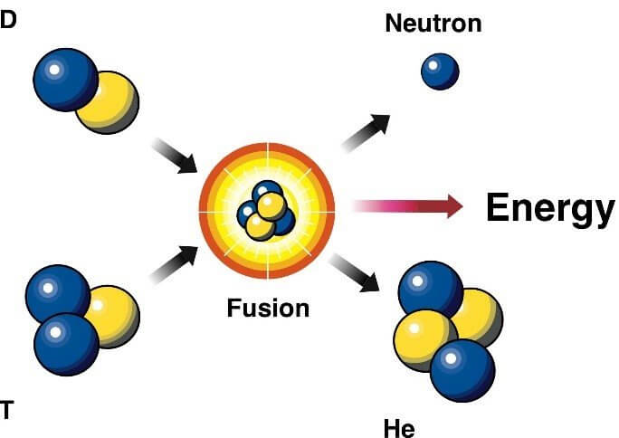

ကျွန်တော်တို့ရဲ့ နေရဲ့သက်တမ်းဟာ အခုဆို နှစ်သန်းပေါင်း ၅,၀၀၀ လောက် ရှိနေပါပြီ။ နေဟာ နောက်ထပ် နှစ်သန်းပေါင်း ၅,၀၀၀ လောက် ဆက်လက် ရှင်သန် နေဦးမယ်လို့ ပညာရှင်တွေက ခန့်မှန်းပါတယ်။
ဒါဆို မေးစရာ ရှိလာပါတယ်။ ဒီလောက်ကြာအောင် လောင်ကျွမ်း နေတာ ဆိုတော့ လောင်စာတွေ မကုန် သွားဘူးလား။ နောက်ပြီး အရာဝတ္ထုတွေ မီးလောင်ကျွမ်းဖို့ အောက်ဆီဂျင် လိုတယ်လို့ ကျောင်းစာမှာ သင်ခဲ့ရ ဖူးတယ်လေ။ ဒီတော့ နေမှာ လောင်နေတဲ့ အောက်ဆီဂျင် ကုန်မသွားဘူးလား။
နေမှာ လောင်ကျွမ်း နေတာ အောက်ဆီဂျင် မကုန်သွားပါဘူး။ ဘာ့ကြောင့်ဆို နေမှာ လောင်ကျွမ်းတဲ့ လောင်ကျွမ်း မှုဟာ အောက်ဆီဂျင် မလိုတဲ့ လောင်ကျွမ်းမှု ဖြစ်ပါတယ်။ တကယ်တော့ လောင်ကျွမ်းမှု လို့တောင် ပြောလို့ မရပါဘူး။ တကယ် နေထဲမှာ ဖြစ်နေတာက အဏုမြူ ဓါတ်ပြုမှု (သို့) အဏုမြူ ဓါတ်ပြောင်းမှု ဖြစ်ပါတယ်။
နေထဲမှာ ဖြစ်နေတဲ့ အဏုမြူ ဓါတ်ပြောင်းမှုက Nuclear Fusion ခေါ်တဲ့ အဏုမြူ ဒြပ်ပေါင်းစပ်မှု ဖြစ်ပါတယ်။ နေဟာ တကယ်တော့ တောက်လောင်နေတဲ့ မီးခဲကြီး မဟုတ်ပဲ အဏုမြူ ဓါတ်ပေါင်းဖိုကြီး တစ်လုံးသာ ဖြစ်ပါတယ်။
ပုံမှန် မီးလောင်ကျွမ်း မှုမှာ သစ်၊ ဝါး၊ မီးသွေး၊ ဓါတ်ဆီ အစရှိတဲ့ လောင်စာတွေမှာ ပါတဲ့ ကာဗွန် အက်တမ်တွေဟာ လေထဲမှာ ရှိနေတဲ့ အောက်ဆီဂျင်နဲ့ ဓါတ်ပြုပြီး ကာဗွန်ဒိုင် အောက်ဆိုဒ် (carbon dioxide)၊ ကာဗွန်မို နောက်ဆိုဒ် (carbon monoxide) အစရှိတဲ့ ဒြပ်ပေါင်းတွေ ထွက်လာပါတယ်။ တချိန်ထဲ မှာပဲ လောင်စာထဲမှာ ပါတဲ့ ဟိုက်ဒြိုဂျင် အက်တမ်ကလဲ အောက်ဆီဂျင်နဲ့ ပေါင်းပြီး ရေ ဖြစ်လာပါတယ်။
လောင်စာထဲ ပါတဲ့ အခြား ဒြပ်စင်တွေပေါ် မူတည်ပြီး အခြား ဓါတု ဓါတ်ပြုမှု တွေလဲ ဖြစ်ပေါ်ပါတယ်။ ဒါပေမယ့် ကာဗွန်နဲ့ ဟိုက်ဒြိုဂျင်တွေ အောက်ဆီဂျင်နဲ့ ပေါင်းစပ်ပြီး လောင်ကျွမ်းတာ ကတော့ အဓိက အများဆုံး ဖြစ်တာပါ။
ဒီလို လောင်ကျွမ်း ဓါတ်ပြုတဲ့ အခါ စွမ်းအင်တွေ ထွက်လာပါတယ်။ ဒီစွမ်းအင်ကို အပူနဲ့ အလင်း အဖြစ်နဲ့ ကျွန်တော်တို့ ခံစား ရပါတယ်။
ကျွန်တော်တို့ နေ့တဒူဝ တွေ့နေရတဲ့ မီးလောင်ကျွမ်းမှု အားလုံး နီးပါးဟာ ကာဗွန် လောင်ကျွမ်းမှု ဖြစ်ပါတယ်။ ဖယောင်းတိုင်မီး၊ မီးသွေးမီး၊ ဂက်စ် မီး၊ မော်တော် ဆိုင်ကယ် နဲ့ ကားအင်ဂျင်က မီး အားလုံးဟာ ကာဗွန်နဲ့ ဟိုက်ဒြိုဂျင် ဒြပ်စင်တွေ အောက်ဆီဂျင်နဲ့ ဓါတ်ပြု လောင်ကျွမ်းပြီး ဖြစ်လာကြ တာတွေချည်း ဖြစ်ပါတယ်။
ဒီ လောင်ကျွမ်းမှု ဖြစ်စဉ်မှာ အောက်ဆီဂျင် လိုအပ်တဲ့ အတွက် ပတ်ဝန်းကျင် လေထဲမှာ အောက်ဆီဂျင် မရှိတော့ရင် မီးလဲ သေသွားပါတယ်။ (အာကာသထဲ ဒုံးစက်တွေ အလုပ်လုပ်ဖို့ ကမ္ဘာကနေ အောက်ဆီဂျင် အရည်ကို သယ်ဆောင်သွားရပါတယ်။)
နေထဲမှာ ဖြစ်နေတဲ့ နျူကလိယ ဖျူးရှင်း ဒြပ် ပေါင်းစပ် မှုမှာတော့ ဒီလို မဟုတ်ပါဘူး။ ဒီ ပေါင်းစပ်ဒြပ်ပြုမှုမှာ အက်တမ်တွေဟာ ပေါင်းသွားပြီး ပိုကြီးမား တဲ့ ဒြပ်စင် အက်တမ်တွေ ဖြစ်ပေါ်လာတာပါ။
ဒီလို နျူကလိယ ဖျူးရှင်း ဒြပ်ပေါင်းစပ်မှု ဖြစ်စဉ်မှာ ရလာတဲ့ ဒြပ်စင်တွေဟာ ဒြပ်စင် အသစ်တွေ ဖြစ်ကြပါတယ်။ ဒီ ဒြပ်စင်တွေဟာ မူလ ဒြပ်စင်တွေ အဖြစ်ကို အလွယ်တကူ ပြန်မပြောင်းနိုင် တော့ပါဘူး။
နေထဲမှာ အဓိက ဖြစ်နေတဲ့ နျူကလိယ ဒြပ်ပေါင်းစပ်မှု ဖြစ်စဉ်ကတော့ ဟိုက်ဒြိုဂျင် အက်တမ် ၄ လုံး ပေါင်းပြီး ဟီလီယမ် အက်တမ် တစ်လုံး ဖြစ်လာတာပါ။ ဒီလို ဖြစ်တဲ့ ဖြစ်စဉ်ကို သေချာ နားလည်ဖို့ ဆိုရင် ဒီ အက်တမ် လေးတွေ အပေါ် သက်ရောက် နေတဲ့ အခြေခံ အားတွေကို သိဖို့ လိုလာပါတယ်။
ပုံမှန် အက်တမ် တစ်လုံး အပေါ်မှာ အဓိက သက်ရောက်နေတဲ့ အားနှစ်မျိုး ရှိပါတယ်။ ပထမ တစ်မျိုးက လျှပ်စစ်သံလိုက် အား (Electromagnetic force) ဖြစ်ပါတယ်။ သံလိုက် တောင်-တောင် ချင်း၊ မြောက်မြောက် ချင်း တွန်းတာ၊ တောင်နဲ့ မြောက် ဆွဲတာ တွေဟာ ဒီ လျှပ်စစ်သံလိုက် အား ကြောင့် ဖြစ်လာတာပါ။ လျှပ်စစ် အနေနဲ့ဆို အဖိုနဲ့ အမဆို ဆွဲမယ်။ အမ အမချင်း အဖို အဖိုချင်းဆို တွန်းမယ်။ ဒါလဲ လျှပ်စစ် သံလိုက် အားကြောင့် ဖြစ်ပေါ်လာတာပါ။
အက်တမ် တစ်လုံးရဲ့ အလယ်က နျူကလိယပ်စ် (Nucleus) ကို ကြည့်လိုက်ရင် သူ့ထဲမှာ ပရိုတွန်တွေနဲ့ နျူထရွန်တွေ ပါဝင်တာကို တွေ့ရမှာ ဖြစ်ပါတယ်။ ဟိုက်ဒြိုဂျင် အက်တမ်မှာ ပရိုတွန် တစ်လုံးပဲ ပါပေမယ့် အခြား အက်တမ်တွေမှာ ပရိုတွန် တစ်လုံးမက ပါဝင် ကြပါတယ်။
ဒီတော့ မေးစရာ ရှိလာတာက အက်တမ်ရဲ့ နျူကလိယပ်စ် ထဲက အဖိုဓါတ် ဆောင်တဲ့ ပရိုတွန်တွေ အချင်းချင်း တွန်းပြီး နျူကလိယပ်စ်ကြီး ပွင့်ထွက် မသွားဘူးလား ဆိုတာပါပဲ။ အလွယ် ဖြေရရင်တော့ ပွင့်ထွက်မသွားဘူး လို့ပဲ ဖြေရမှာပါ။ ဒီနေရာမှာ အဖိုဓါတ်ဆောင်တဲ့ ပရိုတွန်တွေ အချင်းချင်း တွန်းကန်တဲ့ အားထက် ပိုအားကောင်းတဲ့ အားတမျိုးနဲ့ ဆွဲထားလို့ပါ။ ဒီ အားကို နျူကလိယ အားပြင်း (Strong Nuclear Force) လို့ ခေါ်ပါတယ်။
ဒီ နျူကလိယ အားပြင်း ဟာ အရမ်းနီးကပ်မှ ဆွဲနိုင်ပါတယ်။ နဲနဲလေး ဝေးသွားတာနဲ့ သူ့ဆွဲအား စက်ကွင်းကနေ လွတ်ထွက် သွားပါတယ်။ ဒါ့ကြောင့် နေ့တဒူဝ ကြုံတွေ့ရခြင်း မရှိပဲ အက်တမ်ရဲ့ နျူကလိယ အတွင်းမှာပဲ သက်ရောက်နေတာ ဖြစ်ပါတယ်။
ဒီတော့ အပေါ်က ပြောခဲ့သလို ဟိုက်ဒြိုဂျင် အက်တမ် ၄ လုံးပေါင်းပြီး ဟီလီယမ် အက်တမ် တစ်လုံး ဖြစ်တဲ့ ဖြစ်စဉ်ကို ကြည့်လိုက်ရ အောင်ပါ။
ဟိုက်ဒြိုဂျင်ရဲ့ နျူကလိယ ထဲမှာ ပရိုတွန် တစ်လုံးပဲ ပါပါတယ်။ ဒီ ပရိုတွန် ၄ လုံး ပေါင်းပြီး ဟီလီယံ ဖြစ်လာတာပါ။ ဒီနေရာမှာ ပုံမှန်ဆို ပရိုတွန်တွေ အချင်းချင်း တွန်းကန်တဲ့ လျှပ်စစ် သံလိုက် အားက အလွန် အားကောင်းပါတယ်။ ပရိုတွန်တွေ ချိတ်မိဖို့ ဆိုတာက ဒီ တွန်းအားကို လွန်ဆန်နိုင်တဲ့ အားတစ်ခုခုနဲ့ အပြင်ကနေ တွန်းပေးဖို့ လိုအပ်ပါတယ်။
နေရဲ့ ဗဟိုမှာ ဓါတ်ငွေ့တွေရဲ့ ဆွဲငင်အားကြောင့် အလွန် အင်မတန် ပြင်းထန်တဲ့ ဖိအား ဖြစ်ပေါ်လာ ပါတယ်။ ဒီ ပြင်းထန်တဲ့ ဖိအားကြောင့် ဟိုက်ဒြိုဂျင် အက်တမ်ရဲ့ နျူကလိယ ထဲက ပရိုတွန် တွေဟာ ပူးပြီး ကပ်သွားပါတယ်။ ဒီလို ပူးသွားတဲ့ အခါမှာ အပေါ်မှာ ပြောခဲ့တဲ့ နျူကလိယ အားပြင်းရဲ့ သက်ရောက်တဲ့ စက်ဝန်းထဲ ဝင်ရောက်သွားတာမို့ ပြန်မကွာ သွားတော့ပဲ ပူးကပ်သွားကြပါတယ်။ ဒါနဲ့ ဟိုက်ဒြိုဂျင် အက်တမ် ၄ လုံးပေါင်းပြီး ဟီလီယံ အက်တမ် တစ်လုံး ဖြစ်လာရခြင်း ဖြစ်ပါတယ်။
ဒီနေရာမှာ မေးစရာ ထပ်ရှိလာတာက ဟီလီယံရဲ့ နျူကလိယ ထဲမှာက ပရိုတွန် နှစ်လုံးပဲ ရှိပြီး နျူထရွန် နှစ်လုံး အဆစ် ပါနေပါတယ်။ ပေါင်းမိတဲ့ ပရိုတွန် ၄ လုံးမှာ ၂ လုံးက ဘယ်ပြောက်သွားပြီး နျူထရွန် နှစ်လုံးက ဘယ်က ရောက်လာလဲ မေးစရာ ဖြစ်လာပါတယ်။

တကယ့် ဖြစ်စဉ် မှာတော့ ဟိုက်ဒြိုဂျင် ၄ လုံးပေါင်းပြီး ဟီလီယံ တစ်လုံး တန်းဖြစ်တာ မဟုတ်ပါဘူး။ ဟိုက်ဒြိုဂျင် ကနေ ဟီလီယံ ဖြစ်ဖို့ အဆင့်ဆင့် ပေါင်းယူတာ ဖြစ်ပါတယ်။ ဒါပေမယ့် ဒါက ဒီဆောင်းပါးရဲ့ အဓိက ပြောချင်တဲ့ အချက် မဟုတ်တာကြောင့် နောက်မှ ဒီဖြစ်စဉ်ကို အသေးစိတ် ဆောင်းပါး သပ်သပ် ရေးပါမယ်။
ဒီလို ပေါင်းလိုက်တဲ့ အခါမှာ မူလ ပရိုတွန် ၄ လုံးပေါင်းရဲ့ စုစုပေါင်း ဒြပ်ထုက ဟီလီယံ ထဲက ပရိုတွန် ၂ လုံး နျူထရွန် ၂ လုံးပေါင်းရဲ့ စုစုပေါင်း ဒြပ်ထုထက် များနေပါတယ်။ တနည်းပြောရရင် ဒီဖြစ်စဉ်မှာ ဒြပ်ထု ပမာဏ အချို့ ပျောက်ဆုံး သွားပါတယ်။ ဒါဆို ဒီ ပျောက်ဆုံးသွားတဲ့ ဒြပ်တွေ ဘယ်ရောက်ကုန် သလဲ။
ဟုတ်ပါတယ်။ အိုင်းစတိုင်းရဲ့ E = mc^2 အီကွေးရှင်းမှာ ပြောခဲ့သလိုပဲ ပျောက်သွားတဲ့ ဒြပ်ထုတွေဟာ စွမ်းအင် အနေနဲ့ ပြောင်းလဲ သွားတာ ဖြစ်ပါတယ်။
ဒီလို ဟိုက်ဒြိုဂျင် အက်တမ် ၄ လုံးပေါင်းပြီး ဟီလီယံ အက်တမ် တစ်လုံး ဖြစ်တဲ့ ဖြစ်စဉ်ကို နျူကလိယ ဖျူးရှင်း (Nuclear Fusion) လို့ ခေါ်တာ ဖြစ်ပါတယ်။
ဒီဖြစ်စဉ်ဟာ အောက်ဆီဂျင် သုံးတဲ့ ဖြစ်စဉ် မဟုတ်တဲ့ အတွက် အောက်ဆီဂျင် မလိုပါဘူး။ အမှန် ပြောရရင် နေထဲမှာ ရှိတဲ့ အောက်ဆီဂျင် ပမာဏက နည်းနည်းလေးပဲ ရှိတာပါ။ နေထဲမှာ လောင်ကျွမ်းနိုင်လောက်တဲ့ ပမာဏ မရှိပါဘူး။
အခု ဖြစ်ပေါ်လာတဲ့ စွမ်းအင်တွေဟာ နေရဲ့ အတွင်း သူတိုင်ထဲကနေ တဖြည်းဖြည်း နေရဲ့ မျက်နှာပြင် ပေါ်ကို ရောက်လာပါတယ်။ ဒီ့နောက်မှာတော့ ကျွန်တော်တို့ ဆီကို အလင်းရောင် အနေနဲ့ သော်လည်းကောင်း၊ အနီအောက် ရောင်ခြည် (အပူလှိုင်း) အနေနဲ့ရော ရောက်လာပါတယ်။
နေရဲ့ လက်ရှီ ဟိုက်ဒြိုဂျင် ပမာဏဟာ နောက်ထပ် နှစ်သန်း ၅,၀၀၀ စာလောက် ကျန်ပါသေးတယ်။ ဒီ ဟိုက်ဒြိုဂျင်တွေ ကုန်သွားရင် ဘာဖြစ်လာ မလဲ ဆိုတာ အောက်က လင့် က ဆောင်းပါးမှာ ဆက်လက် ဖတ်ရှုနိုင် ပါတယ်။
ဆက်စပ်ဆောင်းပါး – နေရဲ့သက်တမ်း ကုန်သွားရင် ဘာဖြစ်မလဲ
— မောင်သူရ (မြန်မာ့သိပ္ပံ) —